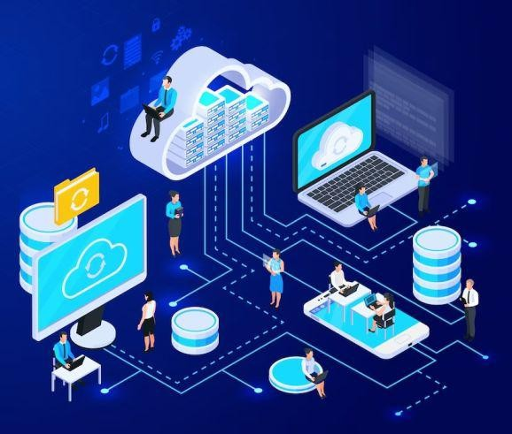

What is Information System Integration?

A collection of interconnected parts used to gather, store, process, and provide data, and digital goods,
otherwise known as an information system (IS). Information systems are essential for businesses and other
organizations to run and oversee their daily operations, communicate with suppliers and consumers, and
fight in the market. Electronic markets and interorganizational supply networks are managed by information
systems. Businesses often employ information systems to handle their human resources, process financial
accounts, and market to prospective consumers online.
Business systems integration involves consolidating information and data from various areas of a company
into a single, accessible location. The aim is to connect internal systems, such as those used to track
new clients, with the company's data collection tools. Essentially, business systems integration ensures
that all of a company's software tools work together harmoniously.
Information systems in business is rapidly evolving due to the information revolution, driven by significant
advancements in technology's cost and performance. This transformation is reshaping the business landscape
for many firms, restructuring entire industries, and enhancing the implementation of competitive strategies.
This shift necessitates the integration of information systems into business strategy formulation. Traditional
approaches to managing IS activities are inadequate for determining business strategies for systems. Instead,
corporate strategic analysis and formulation techniques can guide how IS should be managed to maximise business
benefits.
Enterprise Resource Planning (ERP), Supply Chain Management (SCM), Customer Relationship Management (CRM),
Business Intelligence (BI), and Big Data Analytics (BDA) are all business-related tasks and processes
supported by standardised software solutions. To effectively support these functions, IT specialists and
data scientists need to adopt a business-oriented mindset and approach.
In the context of their roles and significance in business and organizational management we will now look
into the above-mentioned processes:
-
Enterprise Resource Planning (ERP)
ERP is a comprehensive software solution designed to manage and streamline various aspects of a business's
operations. It integrates and centralises data and processes related to finance, human resources, manufacturing,
and more. ERP systems enable efficient data sharing and collaboration across different departments, resulting
in improved decision-making, reduced operational costs, and increased productivity.
-
Supply Chain Management (SCM)
SCM involves the management of the flow of goods, services, information, and finances across the entire supply
chain, from raw material suppliers to end customers. Effective SCM optimises processes, reduces inventory costs,
enhances collaboration with suppliers, and ensures timely delivery of products. It plays a critical role in
minimising supply chain disruptions and improving customer satisfaction.
-
Customer Relationship Management (CRM)
CRM systems are designed to manage and nurture relationships with customers and prospects. They help businesses
collect and analyse customer data to provide personalised experiences and drive sales growth. CRM tools enable
organizations to track customer interactions, manage leads, and improve customer support, ultimately increasing
customer loyalty and revenue.
-
Business Intelligence (BI)
BI refers to the use of technology and data analysis to extract actionable insights from a company's data.
It involves collecting, processing, and visualising data to make informed decisions. BI tools provide dashboards,
reports, and analytics that help businesses monitor key performance indicators, identify trends, and uncover
opportunities or challenges. BI is crucial for data-driven decision-making and strategic planning.
-
Big Data Analytics (BDA)
Big Data Analytics is an advanced form of data analysis that deals with extremely large and complex datasets.
BDA leverages specialized tools and algorithms to process, analyse, and extract valuable insights from massive
volumes of structured and unstructured data. It is instrumental in identifying patterns, trends, and correlations
that might not be evident through traditional data analysis. BDA has applications in areas such as predictive
analytics, customer behaviour analysis, and risk management.
These five categories of software and methodologies are essential for modern businesses looking to improve their
efficiency, decision-making, and competitiveness. When integrated into an organization's operations, they can provide
a holistic view of the business, streamline processes, enhance customer relationships, and help transform data into
valuable insights for informed strategic decisions. Choosing the right combination of these tools and methods depends
on the specific needs and goals of the organization.
Importance of Information System Integration
Systems integration is crucial for various reasons, as it offers a range of benefits to a company or organization.
-
Improve Delivery:
With consolidated data and streamlined processes, employees can enhance their
delivery of products or services. This can lead to meeting sales quotas, providing better customer
experiences, and improving overall service quality. Enhanced delivery can positively impact your
company's reputation and cultivate customer loyalty.
-
Improve Operations:
Systems integration can result in more efficient and productive operations.
By integrating systems, your company can streamline processes. Integrating systems can help
operations staff access the necessary data for order processing, making it easier to locate,
pack, and ship orders to customers.
-
Improve Connectivity:
Systems integration can foster improved connectivity within your organisation.
Different departments can access the same server, facilitating clear communication, efficient information
sharing, and connecting various departments through data. This unified approach enhances the work experience
for your employees.
-
Improve Time Management:
Digital access to information and the ability to communicate with other businesses
through integration can save time. Instead of manual data gathering or physical paperwork, digital processes
can increase organisational efficiency. Employees can use their saved time to focus on other projects, ultimately
boosting productivity.
-
Improve Efficiency:
Systems integration reduces the potential for errors. When data is stored in multiple places, there's a higher
risk of repeated or incorrectly saved information. Integrating company data allows for the easy identification
and correction of errors, thereby increasing operational efficiency
Benefits of a Fully Integrated Information System
Many businesses operate with multiple departments, each having its own processes and operations. Integrating the following
processes through a business systems integration process simplifies collaboration and communication between departments
within the organisation.
-
Improved Communication
Fellow workers can communicate more effectively because they have access to the same information at all times.
This eliminates the need to reconcile data between different systems and departments.
-
Solitary Point of Security
Storing all necessary data in a single information system makes it easier for employees to access relevant information.
Business systems may also implement access restrictions, ensuring that sensitive data is only accessible to authorised
personnel.
-
Minimal Risk of Errors
Since data does not need to be duplicated across multiple systems, there is a lower chance of human errors. This results
in more accurate and reliable information.
-
Live Data
By centralizing all information in one integrated system, access to up-to-date data is achieved. This is crucial for various
aspects of organisation, from marketing communications to financial operations.
-
Increased Productivity
Employees can allocate more time to tasks that contribute to the business's growth, rather than wasting time on data duplication
and waiting for information from other departments.
Challenges in Information System Integration
Although information systems integration has many advantages, there are certain difficulties and possible disadvantages included.
-
Issues Regarding Scalability: It might be logistically difficult for an integration solution to expand with a
business in order to handle more data and traffic.
-
Conforming to Regulations: As systems are increasingly linked, it becomes harder to comply with privacy and data
protection laws, necessitating constant monitoring.
-
Compatibility Issues: Not all systems will function together flawlessly even with careful preparation, which might
result in interoperability problems that need constant maintenance.
-
Maintenance: Updating, maintaining, and providing support for integrated systems is a continuous process that
raises the overall expenses and resource requirements.
-
Technical Skill: Sophisticated technical expertise is necessary for successful integration, but locating and keeping qualified experts can be difficult.
-
High Cost and Complexity: Integration projects have the potential to be costly and complex. It may cost a lot of money to set up the infrastructure,
migrate the data, and configure the systems.
Businesses need to invest in appropriate training, plan carefully, take into account their unique demands, and make certain their integration model is in line
with their technology plan and long-term objectives in order to overcome these obstacles. A competitive advantage, increased productivity, and better
decision-making can result from well-executed information systems integration, despite its complexity and certain drawbacks.
Types of Business Systems Integration
Businesses can implement the following practices in order to achieve optimal integration:
-
Enterprise Application Integration (EAI): This is a comprehensive process that utilizes software and digital technology to integrate data. Aiming to simplify and automate data processes without
requiring major changes to existing operations. EAI functions as a middleware framework, bridging multiple software systems and databases.
-
Data Integration: Data integration combines data from various sources into a unified view, often involving a master server that accesses data from internal and external
sources. Users can access data seamlessly, and the server retrieves the necessary information from different sources, presenting it in a consolidated
form to enhance business operations.
-
Electronic Document Integration/Interchange: This process is commonly used in business-to-business (B2B) interactions, allowing companies to electronically
exchange business documents. Electronic document integration often employs standardised formats to create consistent electronic documents, simplifying and
accelerating business transactions.
>> For example, it replaces the need to mail physical invoices by allowing businesses to send electronic copies for clients to sign and
return. <<
Overall, systems integration is a critical aspect of modern business operations, contributing to improved efficiency, connectivity,
and time management while reducing errors and enhancing delivery and operations. It is essential for organisations looking to
streamline their processes and achieve a competitive edge in their industry.


The Five Steps for Incorporating Business Systems Integration
To successfully incorporate a business systems integration process into the workplace, following these steps can effectively integrate
a business systems solution that aligns with a company's requirements, enhances communication, and streamlines your internal processes.
-
Assess Your Company's Requirements:
Before embarking on the integration process, it is essential to assess a company's unique requirements. Evaluate what the organisation
needs in terms of enhanced internal communications and data integration. Develop a comprehensive list of requirements that are intended
to be incorporated into the system.
-
Conduct an Analysis:
he next step involves conducting a thorough analysis of current systems. Typically, the IT team will take the lead in this phase as they
possess the best understanding of the current system's potential and limitations. The goal is to identify viable approaches for meeting
the list of requirements while ensuring the integrity of existing software systems. During this analysis, some requirements may be deemed
unfeasible, while others may seamlessly align with a company's software infrastructure.
-
Design Software Infrastructure:
Following the evaluation of a current system, an IT team or an external source can proceed to design a software infrastructure system. This
task is often entrusted to software developers. The software infrastructure design governs how data is collected, stored, and secured, taking
into account the integration. Additionally, it outlines a plan for managing the new system, encompassing troubleshooting procedures, risk
mitigation, and alternative options.
-
Design System Integration:
Once the software design is ready to support the new integration system, IT professionals can proceed with designing the integration system
itself. This step involves creating processes, maintenance tests, methods, and other logistical considerations. It is critical to ensure that
the system integration method and the software design are compatible for a seamless transition.
-
Implement the Solution:
The final phase of the process entails implementing the business systems integration solution within the company. While this stage may require
some time, the ultimate outcome is a comprehensive and integrated system tailored specifically to an organisation's needs. Once the system is
successfully implemented, it can then be used as part of a company’s daily operations.